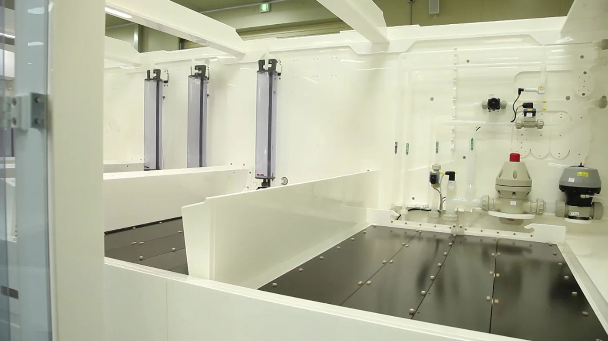
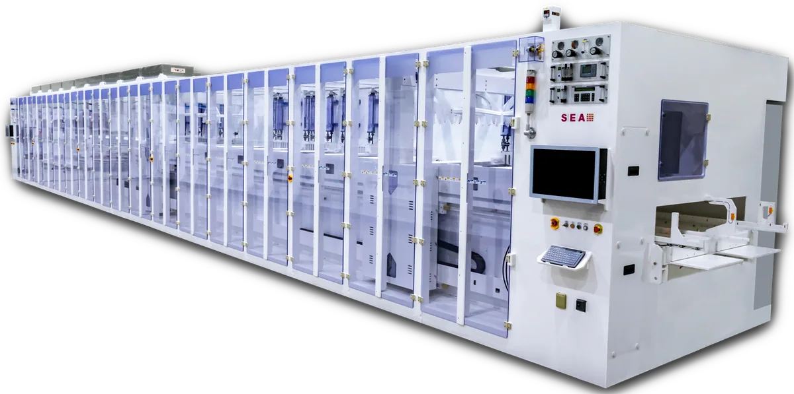
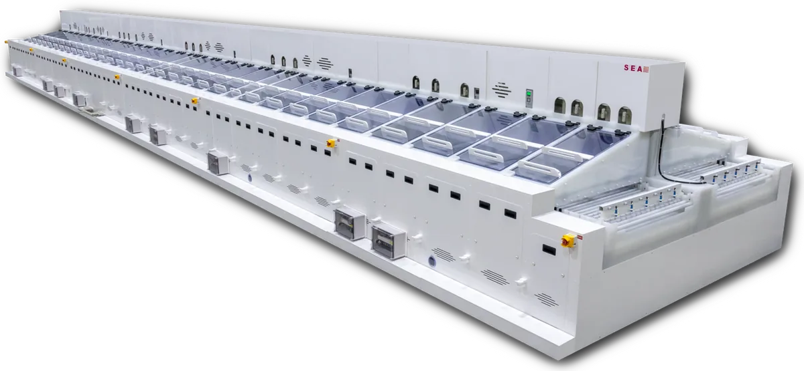
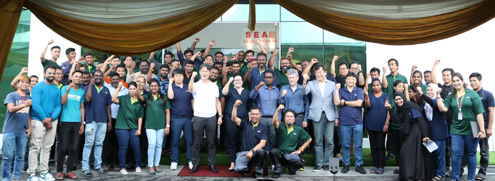

KR본사 · 한국

고효율 태양광 · 반도체 패키지 기판 솔루션
다음 세대 셀을 위한 습식 공정 장비
박막 태양전지와 유리 기판용 습식 장비, TOPCon·PERC·HIT·탠덤 셀의 습식 공정. 태양광·반도체·PCB·FPD 습식 식각 장비 25년 이상의 경험으로 만듭니다.
The problem
수율은 습식 공정에서 갈립니다
셀과 기판이 지나는 세정·식각·건조 단계의 작은 오염과 편차가 효율과 생산량을 깎습니다.
Batch / Inline
배치와 인라인, 라인에 맞게
가운데 손잡이를 좌우로 끌어 두 방식의 장비를 비교해 보세요.

Batch · SEABatch XL
Inline · SEAline XL배치 · 수직한 번에 최대 600장 적재, 12,000 w/h. 텍스처링·산화·SC1/SC2/O3 세정.
인라인기판이 흐르며 HF·RCA·O3 세정, 현상·식각·박리, Electrical deposition. 양면 설계 모델(SEAline_WAR).
The solution
텍스처링부터 건조까지, 8단계
S.E.A. 장비가 다루는 습식 공정입니다. 실제 순서와 조합은 셀·기판과 라인 구성에 따라 달라집니다.
Equipment
장비
카드를 누르면 전체 사양이 열립니다.
메인 페이지 표기 모델: SEABatch XL 600(배치), SEAline_WAR(인라인·양면 설계). 출처: sea-e2e.com 사업부 페이지
Self-check · Planner
우리 라인에 맞는 장비는
장비 찾기
기판과 방식을 고르면 맞는 장비를 보여 드립니다.
기판
선호 방식
처리량 계산
목표 처리량에 SEABatch XL 몇 대가 필요한지 대략 계산합니다.
필요 대수 (12,000 w/h 기준)
5
계산기는 홈페이지에 공개된 최대 처리량(12,000 w/h)만으로 나눈 대략값입니다. 실제 구성은 영업 상담으로 확인하세요.
Industries · Coverage
한국 본사, 미국 현장
S.E.A. America고객 현장
USS.E.A. America · 조지아
미국 지사와 현장
그 밖의 글로벌 거점
미국 거점·현장은 도시 기준 대략 위치입니다.
Certificate
ISO 9001ISO 14001

Award
2022 Malaysia 5 Year Award
말레이시아 제조·서비스 거점과 함께한 5년.
FAQ
자주 묻는 질문
Job · Talent
NoticeTalent
We are looking for passionate and competent candidates with the skills below.
Creative Challenge
Being creative and challenging is necessary to deal with the various issues posed by the customer side.
Execution
Execution based on technological understanding and professionalism.
Communication
Producing equipment is a complete set of co-working procedures, so the ability to cooperate is essential. Cooperation comes from clear communication.
공지
상담
장비 상담
사양·공정·서비스를 AI에게 먼저 물어보고, 견적과 일정은 영업팀과 이야기하세요.
S·E·A AI 상담연결 중
안녕하세요. 장비 사양, 공정, 거점, 문의처를 물어보세요. 홈페이지에 공개된 정보로 답합니다.
라인에 맞는 습식 장비, 상담부터 시작하세요
배치·인라인, 태양광·반도체·글라스. 공정 조건을 알려 주시면 맞는 장비 구성을 제안합니다.